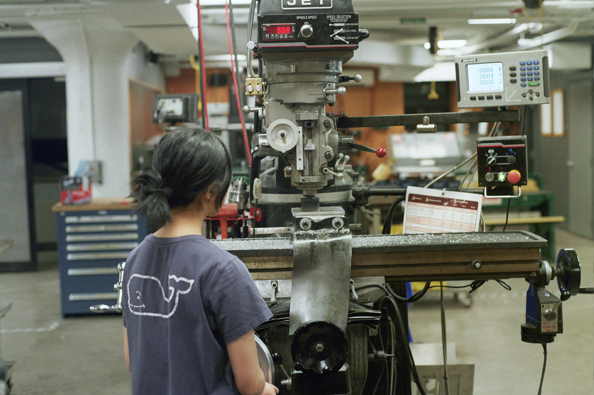
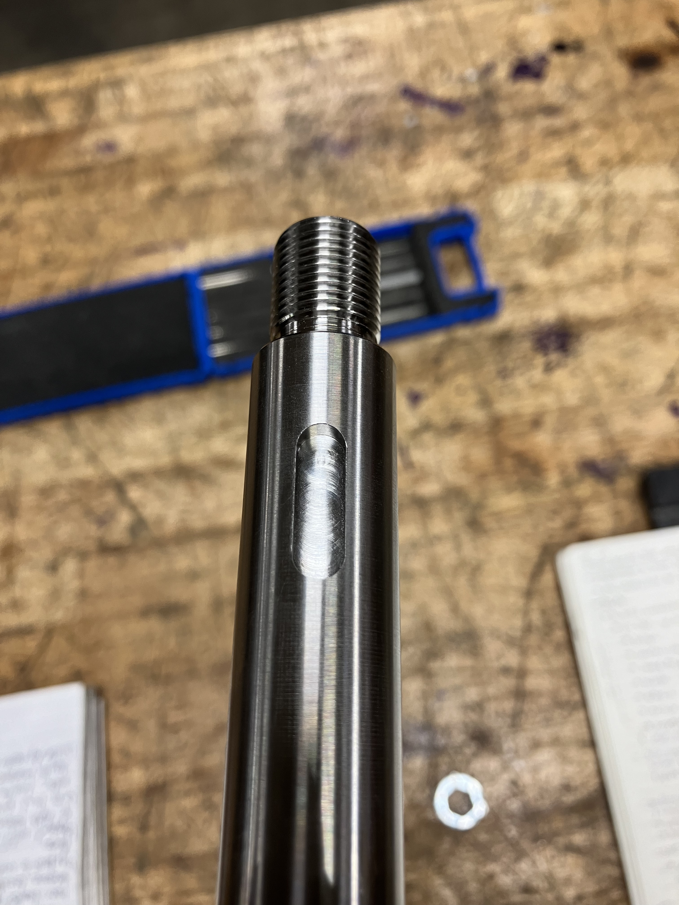

Using a shell mill to flatten piece of aluminum for the engine spacerAbout to fall out of the car...
At the start of my freshman year, I knew nothing about cars and had no experience in designing or making parts. By the end of my freshman year, I've designed a few parts, big and small, and made parts ranging from materials as soft as brass and as hard as titanium. Oh, and I learned a bit about cars.
Despite that, I still have lots to learn. Here's a list of what I wish I learned/had a better understanding of this past season (2023-2024). As we progress through the current season, I'll cross these off!
2024-2025 Goals
Design
1) How contact forces relate to loads seen in real life
2) When to conduct a part-level vs assembly-level simulation
3) What material to choose/why the material was chosen
Manufacturing
1) How cutting conditions affect different materials
2) How material properties determine cutting methods
3) What ideal chips should look like
2025-2026 Goals
Design
1) Using code to model complex mechanical systems to determine unknown load values
2)
3)
Manufacturing
1) How to operate a CNC mill/lathe
2) How different tools affect quality of cuts
3)
Organization
1) How to design software to be more user-friendly
I designed the steering rack housing for the SR24 (2023-2024 vehicle). The goal of this housing was to fit the new dual-rack steering system (previously, the team has used a single-rack system). These few slides I created for our Detailed Design Review in November 2023 explain the differences between SR24 and SR23 (2022-2023 vehicle) and the benefits of the new design.
This project helped me start learning how to conduct finite element analysis (FEA) in SolidWorks. While my teammates were helping me set up part-level and assembly-level FEA, I took some notes, which extended into notes throughout the entire rest of the design process of the steering rack housing and steering rack housing pillow block.
Steering Rack Housing in SR24
Manufacturing
Click to see more!
After a year on CWRU Motorsports, I've made some really cool parts with the help of my more experienced teammates (and with a lot of standing at a machine for an entire day...). I hope I can help others do the same as the Manufacturing Coordinator for CWRU Motorsports' 2024-2025 season!
Suspension Inserts
These suspension inserts are titanium and were made on the lathe.
Heim Joint Inserts
These inserts are locationally fit into the tie rod ends' spherical joints, connecting to the uprights.
Heim Joint Insert SetManufacturing Notes for Heim Joint Inserts
Spherical Joint Inserts
These inserts are locationally fit into the spherical joints in the uprights.
Spherical Joint Insert in LatheSpherical Joint Insert in ProgressManufacturing Notes for Spherical Joint Inserts
Clevis-Side Heim Joint Inserts
These inserts are locationally fit into the tie rod ends' spherical joints, connecting to the steering clevises.
Manufacturing Notes for Clevis-Side Heim Joint Inserts
Front Hub Spindle Yokes (Pre-CNC)
These spindle yokes are titanium and were made on the lathe. They connect the front wheel hubs to the drive shafts.
Finished Spindle Yokes (Pre-CNC)Manufacturing Notes for Spindle Yokes (Pre-CNC)
Spindle Yoke Key Slot Setup in Mill

Spindle Yoke Key SlotManufacturing Notes for Spindle Yoke Key Slots
Project Management
Click to see more!
Going into the 2024-2025 season, our team started putting a great emphasis toward improving our workflow and team culture.
Notion
One huge change we made from previous years was a teamwide shift to using Notion as an organization software.
Parts Tracker
The shift to Notion started with the creation of a new Parts Tracker for the upcoming season. To provide some context, our Parts Tracker was primarily meant for tracking the manufacturing status of our car parts, and it started out on a Google Sheet with tons of formulas and manual labor (I guess you could call it that...).
With the new season, there were many new features that the 2023-2024 Manufacturing Coordinator and I were thinking about implementing, so I wanted to test these features out.
Testing these features out on a Google Sheet just seemed arduous, and would probably have led to tons of roadblocks that impeded on the feature-testing. So, I turned to Notion instead, as I use it for my own personal planner which gave me some Notion experience to create a Parts Tracker.
After rolling out my first draft to the 2023-2024 Manufacturing Coordinator, there was huge support to actually keep the Parts Tracker in Notion. We ultimately ditched Google Sheets since all of the automations and features I set up would've been absolute chaos and, in some cases, impossible to set up in Google Sheets.
In addition to the automations, the new Parts Tracker also gave room for more information with less clutter. With Notion's ability to have different views of the same information, our team can now view part design status, analysis status, manufacturing status, vendor/sponsor order status, and so much more.
SR24 Parts Tracker in Google SheetsSR25 Parts Tracker in Notion
The Spread of Notion
A few other subteam leads appreciated the possibilities of Notion as well, so they started making their own spaces in our team's Notion workspace. With everything that I learned from setting up the Parts Tracker in Notion, I guided other team leads in making their own integrations with Notion's colorful palette of features.
This signaled a huge shift for our team, as now we had planners and timelines accessible to everyone on the team, and much of our written documentation was now housed in our Notion workspace. Google Drive is no longer the go-to for meeting minutes and other written documentation, and our transition to Notion birthed a robust team wiki, design tracker, part analysis tracker, onboarding planner, purchase order tracker, and so much more.